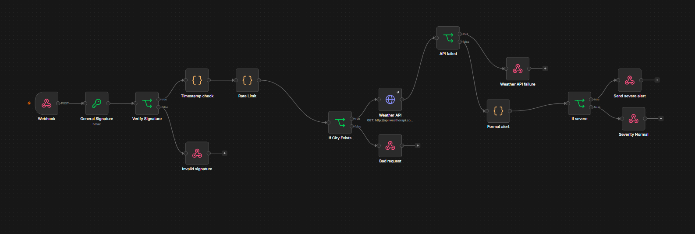

AI Automation
Repetitive, rule-based work handled end to end.
Clarity Automations
Practical AI agents and automations that remove repetitive manual work from your business.
We start with the process that costs you time, then design a reliable automation around it. AI where it genuinely helps, structured workflows where it doesn't.
Repetitive, rule-based work handled end to end.
Agents that reason, keep context, and act across tools.
The systems you already use, connected into one flow.
Built around your process, not a one-size-fits-all template.
Six ways we remove repetitive work with AI, each built on platforms you can audit and maintain.
Conversational and task-oriented agents that keep context, reason about your data, and take action, from research assistants to email triage.
Reliable end-to-end automations that replace manual, repetitive processes with validated AI steps and clean error handling.
Connected multi-step workflows that move work between your existing apps, with no copy-paste and no missed hand-offs.
Tailored AI built around your specific process, data, and constraints, designed to solve one real problem well.
Internal assistants that answer questions, summarize documents, and give your team accurate answers from your own knowledge.
Secure integrations with the APIs and platforms you already use, with webhooks, validation, rate limiting, and monitoring built in.
Four stages, from understanding the problem to a system that keeps improving after launch.
We map the process that's costing you time and pin down where AI genuinely helps.
We architect the workflow, data flow, and integrations, including security and validation.
We develop and integrate the solution using proven platforms and APIs.
We launch, monitor, and continuously optimize based on real usage.
Practical use cases we build for growing businesses, each designed around a specific process problem.
Resolve common questions instantly and route the rest to the right person.
Score and qualify leads automatically so your team focuses on real opportunities.
Extract, validate, and organize information from emails, PDFs, and forms.
Gather and summarize market, competitor, and industry research on demand.
Give employees instant answers from your own documents and knowledge base.
Deliver accurate, scheduled reports without manual spreadsheet work.
Clean, transform, and move data between systems reliably and consistently.
Connect the steps between your apps so work flows without manual hand-offs.
Send the right alert to the right person at the right time.
Automate judgment-based tasks like triage, routing, and prioritization.

I build practical AI systems that quietly remove repetitive work, so your team can focus on the work that matters.
I'm Zunaira, founder of Clarity Automations and an AI solutions developer. My work focuses on AI, AI agents, and AI automation: from secure webhook automations and email intelligence systems to conversational research agents built with n8n, Google Gemini, and the Anthropic Claude API.
I care about the details most automation projects skip: validating every input, handling errors cleanly, and designing workflows your team can actually rely on. No hype, no demo-ware. Just AI that works, maintained with the same care it was built with.
Verified coursework in AI automation and AI agents, issued in 2026.
LearnKartS, offered through Coursera
July 2026
LearnKartS, offered through Coursera
July 2026
LearnKartS, offered through Coursera
August 2026
Real automations built by Clarity Automations, each one solving a specific business process.

A weather monitoring automation built in n8n. It validates incoming requests, pulls real-time weather data, classifies severity, and sends automated alerts.
Problem it solves: replaces manual weather monitoring with a secure, validated alert system that only notifies when weather actually warrants it.

Monitors incoming Gmail, classifies each message with rule-based logic, routes it to the right process, and logs the outcome in Google Sheets.
Problem it solves: stops manual inbox triage by sending each email to the workflow it belongs in, automatically.

A conversational agent built with n8n and Google Gemini. It keeps context across the conversation and calls web search when it needs up-to-date information.
Problem it solves: turns scattered manual searching into an interactive assistant that answers follow-ups with current, sourced information.

An AI email workflow that classifies and summarizes incoming Gmail, validates the AI output, and fails over to the Anthropic Claude API when the primary model is unavailable.
Problem it solves: adds resilience to automated email processing with a multi-model fallback, so classification keeps working under load.
More projects and screenshots are added here as each build is documented.
The stack behind every build, chosen for reliability and easy maintenance.
Let's discuss how AI and automation can improve your workflow.
Prefer email? Write to us directly with a short summary of the process you'd like to automate, and we'll take it from there.